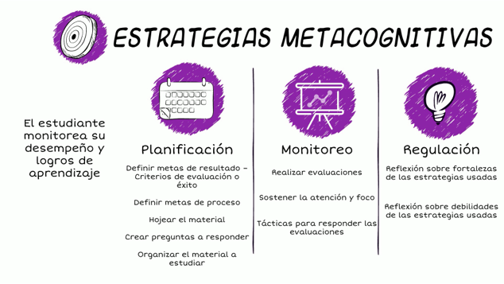

En este ensayo explicaré la importancia de las técnicas de estudio y las estrategias de estudio, explicaremos esto ya que el estudio es una actividad esencial en la vida de cualquier persona humana que desee tener un éxito en su carrera o en cualquier ámbito de su vida, claro que en alguno de los casos el estudio es una tarea difícil y tediosa por eso en este ensayo explicaremos algunas técnicas y estrategias de estudio efectivas que pueden ayudar a cualquier persona a mejorar sus habilidades de estudiar y así poder entender de una manera más eficaz
Las técnicas de estudio y las estrategias de estudio son un tanto diferente ya qué la utilización de las técnicas de estudio adecuadas para consolarizar los conocimientos adquiridos durante el proceso educativo es decir durante la escolaridad ya sea primaria secundaria preparatoria o universidad, algunas de las técnicas incluyen la elaboración de resumen, mapas conceptuales, esquemas entre otros ya que es importante identificar cuáles son las más apropiadas para cada persona así como también es importante la práctica de ejercicios y repasos frecuentes de todos los temas para consolidar la información adquirida. En cambio para llevar a cabo las estrategias de estudio en primer lugar se debe contar con motivación y automotivación, que saber cuánto me conozco, cómo estudié y hasta dónde soy capaz de llegar independientemente de si me gusta o no me gusta la materia. En cuanto lugar de estudios es necesario que sea alrededor de paredes en color blanco para evitar el cansancio en los ojos ; también es muy importante no contar con distracciones, como por ejemplo el teléfono celular, música u otros ruidos o tipo de objetos. Asimismo podrías guiarte de las mejores técnicas y estrategias de estudio de este ensayo
